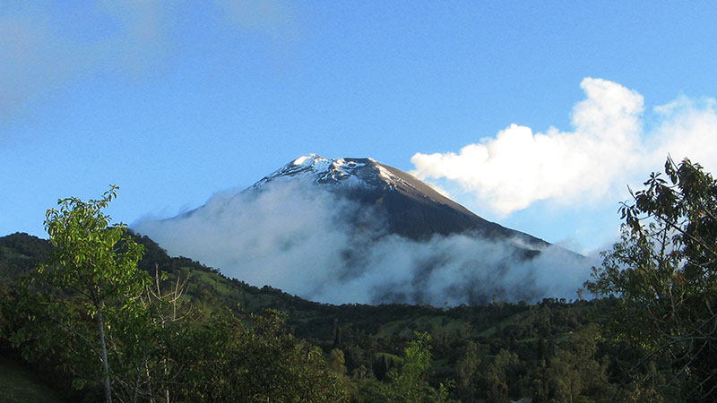
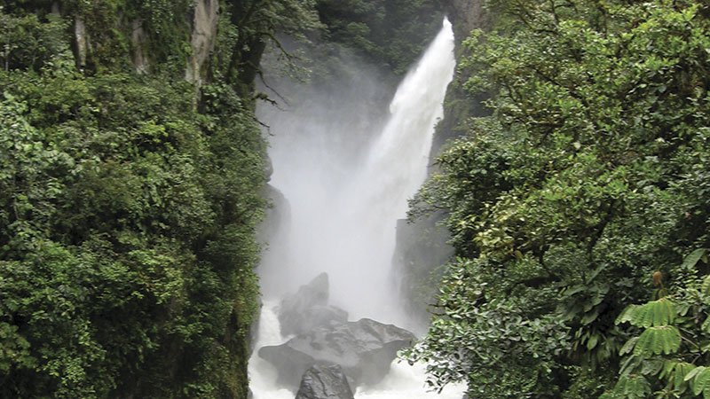

<div class="port-holder">
	<div class="col-md-8">
		<div class="portfolio-media">
			<script>
				$(document).ready(function() {
					$(function() {
						$(".rslides-portfolio").responsiveSlides({
							nav: true,
							auto: true,
							prevText: "<i class='fa fa-angle-left'></i>",
							nextText: "<i class='fa fa-angle-right'></i>"
						});
					});
				});
			</script>
			<ul class="rslides rslides-portfolio rslides1">
				<li>
                
                </li>
				<li >
                
                </li>
		
			</ul>
		</div>
	</div>
	<div class="col-md-4">
		<h4 style="line-height: 20px">Project Details</h4>
		<div class="portfolio-detail">
			<span style="font-weight: 700;">Skills</span>: Photography.
		</div>
		<div class="portfolio-detail">
			<span style="font-weight: 700;">Release Date</span>: 2011
		</div>
		<div class="portfolio-detail">
			<span style="font-weight: 700;">Client</span>: Personal Project
		</div>
		
		<h4 style="margin-top: 10px;">Description</h4>
		<p class="description-portfolio">
			Photography of Natural Landscapes located in Baños de Agua Santa - Ecuador.
		</p>
	</div>
	<div class="clearfix"></div>
	<div class="span12">
		<div class="divider"></div>
	</div>
</div>